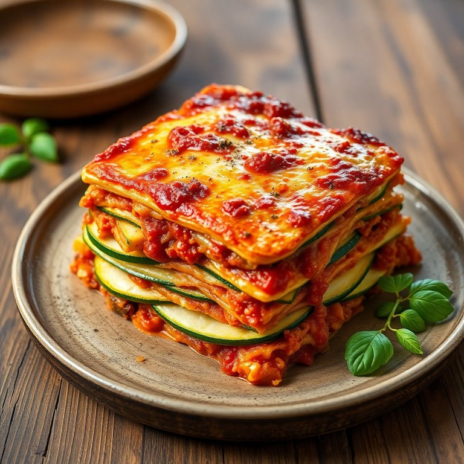

Ingredientes
- Láminas de lasaña
- Verduras variadas (espinacas, berenjenas, pimientos, champiñones)
- Queso rallado
- Salsa de tomate
- Bechamel
Instrucciones
- Cocer las láminas de lasaña según las instrucciones del paquete.
- Saltear las verduras en una sartén hasta que estén tiernas.
- En una bandeja de horno, alterna capas de láminas de lasaña, verduras, salsa de tomate y bechamel.
- Termina con una capa de queso rallado.
- Hornea a 180°C durante 30-40 minutos, hasta que esté dorada y burbujeante.